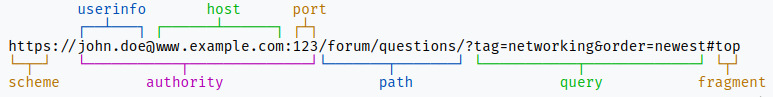

REST#
REST (REpresentational State Transfer) is an architectural style for distributed systems based on hypermedia like The Web. REST is based on resources and representations.
Concepts#
Resources#
REST resources have:
- An URI
- Hyperlinks to them
- A state
- Representation: txt, html, json, xml, etc.
Representations#
- Resources are not their representations, i.e. Users stored in a DB (the resource) can be represented in txt, html, json, xml, etc.
- A representation represents the resource state.
- Many representations can be acceded with the same URI.
URI#
An URI (Uniform Resource Identifier) unequivocally identify a resource.
Syntax#
URI syntax#
URI = scheme “:” [“//” authority] path [“?” query] [“#” fragment]
where authority syntax is the following.
Authority syntax#
authority = [userinfo “@”] host [“:” port]
Example#
There is an example from wikipedia:

Indeed the wikipedia link is an URI and also this website.
Principles#
The REST Principles are:
- Stateless
- Client-server
- Uniform interface
- Cacheable
- Layered system
- Code on demand
Principles from RapidApi.
Stateless#
An HTTP request will contain all the necessary information to make the server understand the request.
That information is in the URI, their parameters, the HTTP header and body.
Client-server#
Both the client and the server are completely autonomous in every way. Their communication will only happen using the REST API.
This improves the portability of the codebase across multiple platforms and also helps with making the server scalable.
Uniform interface#
Provides four interfaces to achieve uniformity:
- Resource identification by URI
- Resource manipulation using representations
- Self-descriptive messages
- Hypermedia as the engine of application state
Cacheable#
If a response is set as cacheable, both client and server can save a copy in chache.
This improve the performance:
- When the server does the cache, it reduces the server load and decrease the reponse time.
- When the client does the cache, is not needed to send the request.
Layered systems#
Relies on layered system architecture. So the client can not know at any time whether it is connected to the final server or to an intermediate one.
This helps with improving security as components in each layer cannot interact beyond the next immediate layer they are in.
Code on demand#
It allows a client code to be downloaded and to be used within the application.
This is not a required constraint.